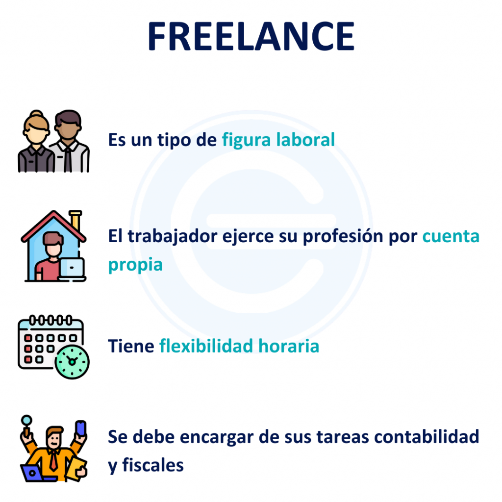

Un freelance es un trabajador independiente que ofrece sus servicios de manera autónoma a diferentes clientes o empresas, sin estar ligado a un empleador fijo. Esta modalidad ofrece flexibilidad para elegir proyectos, horarios y lugar de trabajo, a cambio de una compensación por proyecto o por hora
La importancia de las personas freelance en la actualidad ha crecido considerablemente, y esto se debe a varios factores clave que están influyendo en el mercado laboral global. Aquí te dejo algunos de los motivos principales:
Con el crecimiento de la economía digital y el trabajo remoto, las plataformas online (como Upwork, Fiverr, Freelancer, etc.) han permitido a las personas ofrecer sus servicios de manera global y directa. Además, sectores como el marketing digital, la programación, la consultoría y la creación de contenido han experimentado un auge en los últimos años, lo que favorece aún más la contratación de freelance.